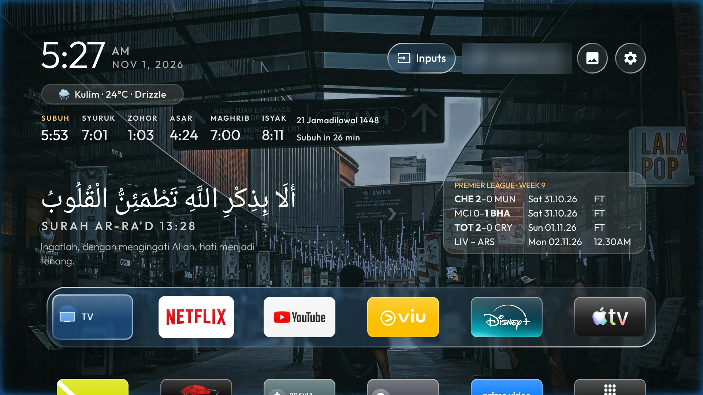
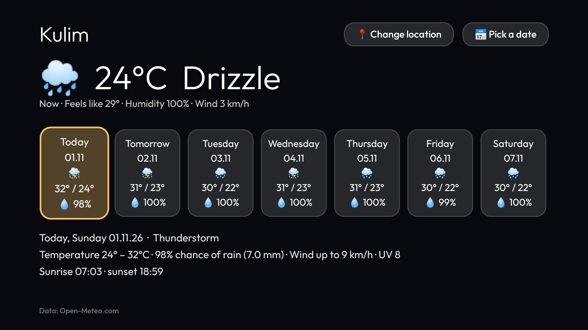
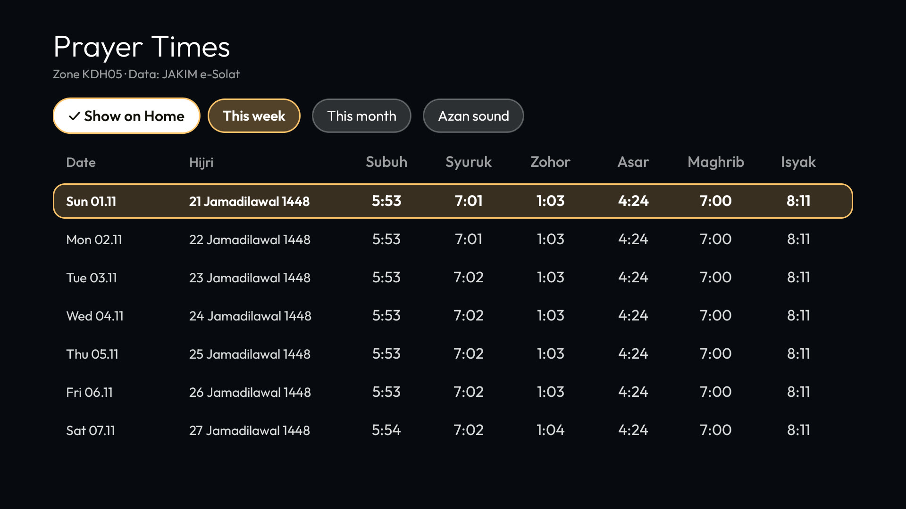
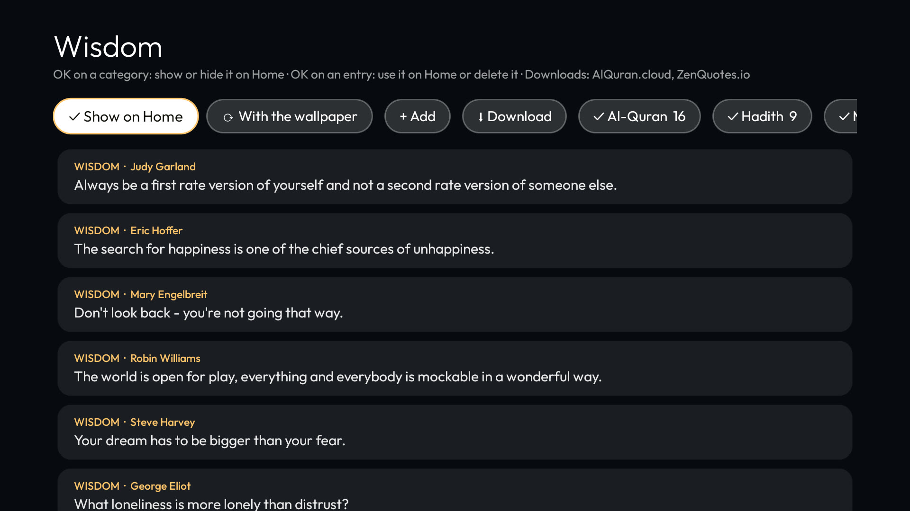
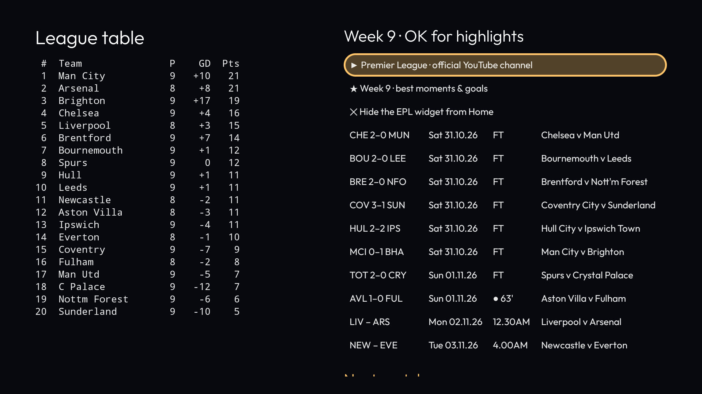
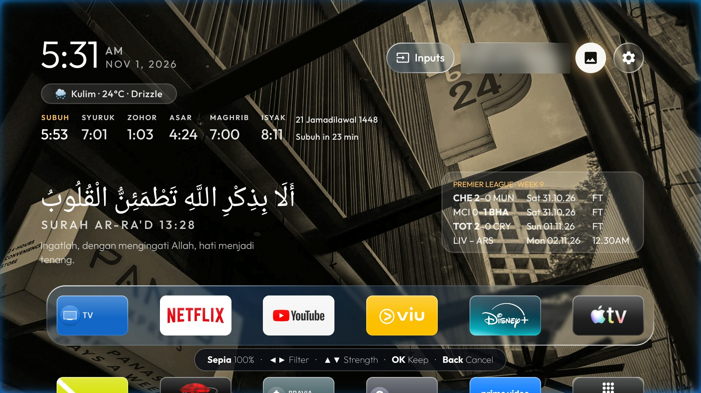
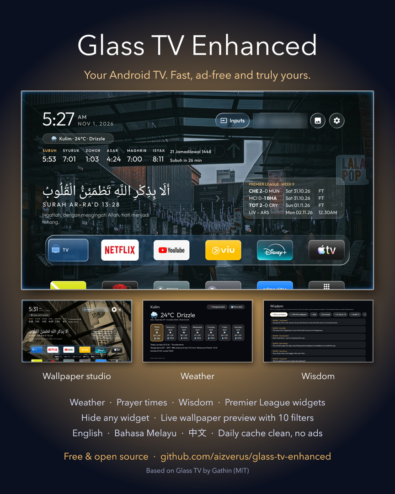

Free and open source. No ads, no bloat, nothing to sign up for. Everything works from an ordinary remote.

Clock, weather, prayer times, Wisdom and Premier League widgets above a frosted-glass dock.

Now and the days ahead from Open-Meteo, with rain, wind, UV, sunrise and sunset. No key needed.

JAKIM e-Solat times with a countdown, an azan or chime at each prayer, and the whole week or month.

Quran verses, hadith and quotes. Add your own, download more, pin one, or let them change every few minutes.

Your teams' scores with the winner in bold, the table, and highlights one click away on YouTube.

Try a picture on the real Home before choosing it. Ten filters at any strength. Send photos from your phone.
Hold OK on any widget and choose Hide from Home. Each one has its own tile in All apps to bring it back.
No mouse, no phone app, no menus to dig through.
| Where | Press | What happens |
|---|---|---|
| Any widget | OK | Opens it: the weather page, the league table, other words, the azan sound |
| Any widget | Hold OK | Its menu, including Hide from Home |
| Wallpaper preview | ◀ ▶ · OK · ▲ · ▼ | Next picture · use it · delete it · filters |
| Filters | ◀ ▶ · ▲ ▼ | Next filter · stronger or fainter |
| All apps | Language tile | English, Bahasa Melayu, 中文, or follow the TV |

Glass TV Enhanced installs over Wi-Fi, needs no root, and nothing it does can't be undone.
AGENTS.md, or follow the steps by hand.git clone https://github.com/aizverus/glass-tv-enhanced cd glass-tv-enhanced python3 -m venv tools/venv && tools/venv/bin/pip install -r tools/requirements.txt export TV_HOST=192.168.1.50 # your TV's IP address launcher/build-and-install.sh
Full steps: setup guide · features guide